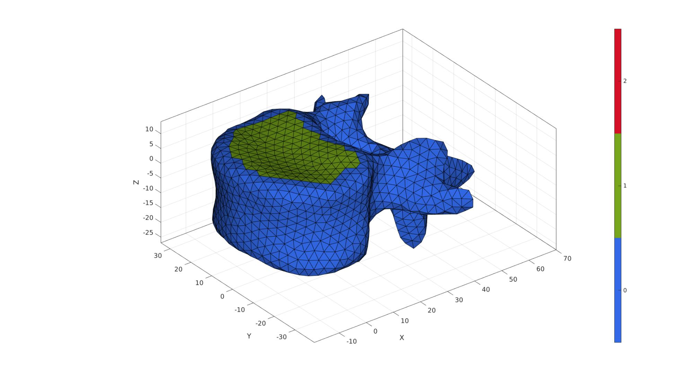
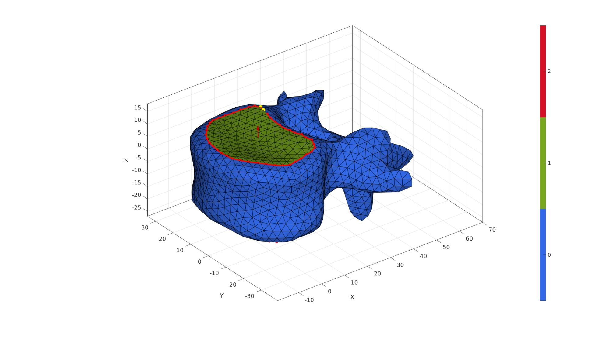
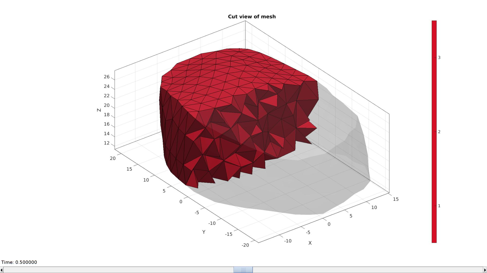
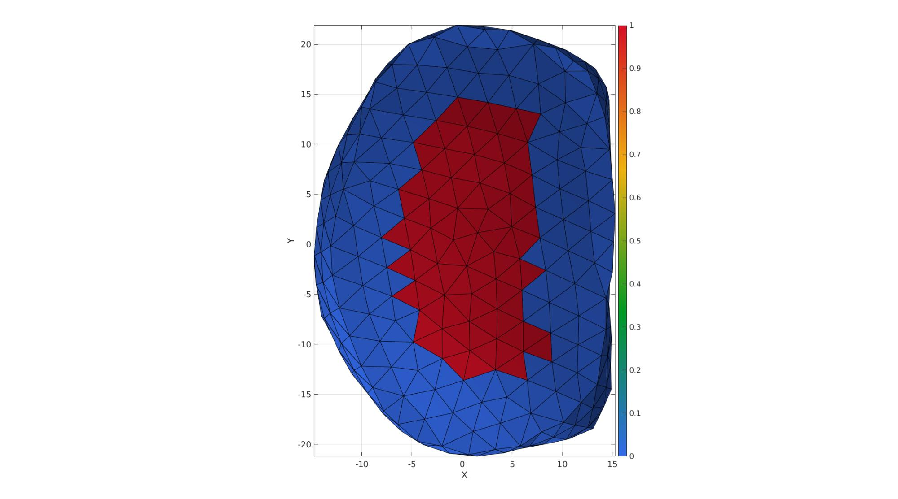

DEMO_febio_0060_vertebrae_disc_01
Below is a demonstration for:
- Building triangulated surface geometry for a spine segment
- Defining the boundary conditions
- Coding the febio structure
- Running the model
- Importing and visualizing results
Contents
Keywords
- febio_spec version 2.5
- febio, FEBio
- spine, vertebra, disc
- contact, sliding, friction
- tetrahedral elements, tet4
- hexahedral elements, hex8
- static, solid
- hyperelastic, Ogden
- displacement logfile
clear; close all; clc;
Plot settings
fontSize=15; faceAlpha1=1; faceAlpha2=0.3; markerSize1=25; markerSize2=10; lineWidth=2; boneColor=[1.0000 0.9500 0.8000]; discColor=[0.8500 0.5000 0.3000];
Control parameters
% Path names defaultFolder = fileparts(fileparts(mfilename('fullpath'))); savePath=fullfile(defaultFolder,'data','temp'); % Defining file names febioFebFileNamePart='tempModel'; febioFebFileName=fullfile(savePath,[febioFebFileNamePart,'.feb']); %FEB file name febioLogFileName=fullfile(savePath,[febioFebFileNamePart,'.txt']); %FEBio log file name febioLogFileName_disp=[febioFebFileNamePart,'_disp_out.txt']; %Log file name for exporting displacement febioLogFileName_force=[febioFebFileNamePart,'_force_out.txt']; %Log file name for exporting force febioLogFileName_strainEnergy=[febioFebFileNamePart,'_energy_out.txt']; %Log file name for exporting strain energy density %Geometric parameters vertebraOffset=[0 0 30]; discHeight=12; rotAngleVert2=0; volumeFactorDisc=1; annulusFibrosusFraction=0.5; numLayers=3; % Material parameters % Disc c1_1=1; %Shear-modulus-like parameter in MPa m1_1=2; %Material parameter setting degree of non-linearity k_1=c1_1*100; %Bulk modulus % FEA control settings numTimeSteps=10; %Number of time steps desired max_refs=25; %Max reforms max_ups=0; %Set to zero to use full-Newton iterations opt_iter=10; %Optimum number of iterations max_retries=8; %Maximum number of retires dtmin=(1/numTimeSteps)/100; %Minimum time step size dtmax=1/numTimeSteps; %Maximum time step size symmetric_stiffness=0; min_residual=1e-20; runMode='external'; %Boundary condition parameters forceApplied=1; displacementMagnitude=-1;
Get vertebra bone model
[F1,V1]=graphicsModels('vertebra');
rotAngle=-6;
R=euler2DCM([0 (rotAngle./180)*pi 0]);
V1=V1*R;
pointSpacing=mean(patchEdgeLengths(F1,V1));
V1F=patchCentre(F1,V1); N=patchNormal(F1,V1); nz=[0 0 1]; a=acos(dot(N,nz(ones(size(N,1),1),:),2)); D=sqrt(sum(V1F(:,[1 2]).^2,2)); logicTop=D<24 & a<0.27; indNotInLogic=unique(F1(~logicTop,:)); logicTop=logicTop & ~any(ismember(F1,indNotInLogic),2); logicTop=triSurfLogicSharpFix(F1,logicTop,3); D=minDist(V1F(:,[1 2]),V1F(logicTop,[1 2])); logicBottom=D<3 & a>pi-0.4; logicBottom=triSurfLogicSharpFix(F1,logicBottom,3); indNotInLogic=unique(F1(~logicBottom,:)); logicBottom=logicBottom & ~any(ismember(F1,indNotInLogic),2); logicBottom=triSurfLogicSharpFix(F1,logicBottom,3); C1=zeros(size(F1,1),1); C1(logicTop)=1; C1(logicBottom)=2;
Eb1=patchBoundary(F1(C1==1,:),V1); indList1=edgeListToCurve(Eb1); indList1=indList1(1:end-1); Eb2=patchBoundary(F1(C1==2,:),V1); indList2=edgeListToCurve(Eb2); indList2=indList2(1:end-1);
n=[numel(indList1) numel(indList2)]; [nMax,indMax]=max(n); nn=abs(diff(n)); switch indMax case 1 [F1,V1,Eb2,C1]=triSurfSplitBoundary(F1,V1,Eb2,size(Eb2,1)+nn,C1); indList2=edgeListToCurve(Eb2); indList2=indList2(1:end-1); case 2 [F1,V1,Eb1,C1]=triSurfSplitBoundary(F1,V1,Eb1,size(Eb1,1)+nn,C1); indList1=edgeListToCurve(Eb1); indList1=indList1(1:end-1); end indList2=fliplr(indList2);
nc=10; ns=50; [V1]=smoothCurve(F1,V1,nc,ns,indList1); [V1]=smoothCurve(F1,V1,nc,ns,indList2); P11=mean(V1(indList1,:),1); N11=mean(patchNormal(F1(C1==1,:),V1),1); P12=mean(V1(indList2,:),1); N12=-mean(patchNormal(F1(C1==2,:),V1),1);
cFigure; hold on; gpatch(F1,V1,C1,'k',1); plotV(V1(indList1,:),'r.-','MarkerSize',25,'LineWidth',3); plotV(V1(indList2,:),'r.-','MarkerSize',25,'LineWidth',3); % plotV(V1(indRigid,:),'c.','MarkerSize',15); quiverVec(P11,N11,5,'r'); quiverVec(P12,N12,5,'r'); axisGeom(gca,fontSize); colormap gjet; icolorbar; camlight('headlight'); gdrawnow;
F2=F1; V2=V1; C2=C1; R2=euler2DCM([0 (rotAngleVert2./180)*pi 0]); V2=V2*R2; V2=V2+vertebraOffset(ones(size(V1,1),1),:); V2(:,3)=V2(:,3)+discHeight; P21=mean(V2(indList1,:),1); N21=mean(patchNormal(F2(C2==1,:),V2),1); P22=mean(V2(indList2,:),1); N22=-mean(patchNormal(F2(C2==2,:),V2),1);
f=discHeight/3; p=[P11;P11+f*N11; P22-f*N22; P22]; numStepsCurve=ceil(discHeight./pointSpacing); Vg=bezierCurve(p,numStepsCurve); [Fds,Vds,Cds]=sweepLoft(V1(indList1,:),V2(indList2,:),N11,N12,Vg,numStepsCurve); [~,~,Nd]=patchNormal(Fds,Vds); CVds=faceToVertexMeasure(Fds,Vds,Cds); CVds=CVds-min(CVds(:)); CVds=CVds./max(CVds(:)); CVds=abs(CVds-0.5); CVds=CVds./max(CVds(:)); CVds=CVds.^2; CVds=1-CVds; Vds=Vds+discHeight/10*Nd.*CVds; [Fds,Vds]=quad2tri(Fds,Vds,'a'); clear cPar; cPar.n=5; cPar.Method='HC'; cPar.RigidConstraints=unique(patchBoundary(Fds,Vds)); [Vds]=patchSmooth(Fds,Vds,[],cPar); [Fd,Vd,Cd]=joinElementSets({Fds,fliplr(F2(C2==2,:)),fliplr(F1(C1==1,:))},{Vds,V2,V1}); [Fd,Vd]=patchCleanUnused(Fd,Vd); [Fd,Vd]=mergeVertices(Fd,Vd);
Visualize imported surfaces
cFigure; hold on; gpatch(F1,V1,'rw','none',0.5); gpatch(F2,V2,'gw','none',0.5); gpatch(Fd,Vd,Cd,'k',1); % plotV(Vg,'r.-','MarkerSize',25,'LineWidth',3); camlight('headlight'); axisGeom(gca,fontSize); colormap gjet; icolorbar; gdrawnow;
Mesh disc with tetrahedral elements
Tet meshing is based on tetgen. TetGen requires a interior points for regions to be meshed, as well as intertior points for holes.
Define region points
[V_region]=getInnerPoint(Fd,Vd);
Visualize interior points
cFigure; hold on; hp1=gpatch(Fd,Vd,'kw','none',0.5); patchNormPlot(Fd,Vd); hp2=plotV(V_region,'r.','markerSize',markerSize1); legend([hp1 hp2],{'Disc mesh','Region point'}); axisGeom(gca,fontSize); camlight('headlight'); gdrawnow;

Mesh using tetgen
inputStruct.stringOpt='-pq1.2AaY'; %TetGen option string inputStruct.Faces=Fd; %The faces inputStruct.Nodes=Vd; %The vertices inputStruct.holePoints=[]; %The hole interior points inputStruct.faceBoundaryMarker=Cd; %Face boundary markers inputStruct.regionPoints=V_region; %The region interior points inputStruct.regionA=tetVolMeanEst(Fd,Vd)*volumeFactorDisc; %Volume for regular tets
Mesh model using tetrahedral elements using tetGen
[meshOutput]=runTetGen(inputStruct); %Run tetGen
%%%%%%%%%%%%%%%%%%%%%%%%%%%%%%%%%%%%%%%%%%%%% --- TETGEN Tetrahedral meshing --- 07-Jul-2020 10:03:14 %%%%%%%%%%%%%%%%%%%%%%%%%%%%%%%%%%%%%%%%%%%%% --- Writing SMESH file --- 07-Jul-2020 10:03:14 ----> Adding node field ----> Adding facet field ----> Adding holes specification ----> Adding region specification --- Done --- 07-Jul-2020 10:03:14 --- Running TetGen to mesh input boundary--- 07-Jul-2020 10:03:14 Opening /mnt/data/MATLAB/GIBBON/data/temp/temp.smesh. Delaunizing vertices... Delaunay seconds: 0.018735 Creating surface mesh ... Surface mesh seconds: 0.002958 Recovering boundaries... Boundary recovery seconds: 0.004153 Removing exterior tetrahedra ... Spreading region attributes. Exterior tets removal seconds: 0.002478 Recovering Delaunayness... Delaunay recovery seconds: 0.002329 Refining mesh... Refinement seconds: 0.169956 Optimizing mesh... Optimization seconds: 0.013369 Writing /mnt/data/MATLAB/GIBBON/data/temp/temp.1.node. Writing /mnt/data/MATLAB/GIBBON/data/temp/temp.1.ele. Writing /mnt/data/MATLAB/GIBBON/data/temp/temp.1.face. Writing /mnt/data/MATLAB/GIBBON/data/temp/temp.1.edge. Output seconds: 0.156609 Total running seconds: 0.370885 Statistics: Input points: 2066 Input facets: 4128 Input segments: 6192 Input holes: 0 Input regions: 1 Mesh points: 12558 Mesh tetrahedra: 73607 Mesh faces: 149278 Mesh faces on exterior boundary: 4128 Mesh faces on input facets: 4128 Mesh edges on input segments: 6192 Steiner points inside domain: 10492 --- Done --- 07-Jul-2020 10:03:14 %%%%%%%%%%%%%%%%%%%%%%%%%%%%%%%%%%%%%%%%%%%%% --- Importing TetGen files --- 07-Jul-2020 10:03:14 --- Done --- 07-Jul-2020 10:03:15
Access model element and patch data
Fb_disc=meshOutput.facesBoundary; %Boundary faces of the disc Cb_disc=meshOutput.boundaryMarker; %Boundary marker/color data for the disc V_disc=meshOutput.nodes; %The vertices/nodes E_disc=meshOutput.elements; %The tet4 elements
Visualizing mesh using meshView, see also anim8
meshView(meshOutput);

VE_disc=patchCentre(E_disc,V_disc); Eb=patchBoundary(Fb_disc(ismember(Cb_disc,[2,3]),:),V_disc); indB=unique(Fb_disc(ismember(Cb_disc,1),:)); [D,~]=minDist(VE_disc(:,[1 2]),V_disc(indB,[1 2])); D=D./max(D(:)); D=1-D; logicAnnulusFibrosus=D<=annulusFibrosusFraction; D(logicAnnulusFibrosus)=annulusFibrosusFraction; D=D-min(D(:)); D=D./max(D(:)); [FE,CF]=element2patch(E_disc,logicAnnulusFibrosus);
cFigure; hold on; gpatch(FE,V_disc,CF,'k',1); axisGeom; camlight headlight; view(2); colormap gjet; colorbar; gdrawnow;
VEb=patchCentre(Eb,V_disc); t = atan2(VEb(:,2),VEb(:,1)); T = atan2(VE_disc(:,2),VE_disc(:,1)); VEb=patchCentre(Eb,V_disc); NE=vecnormalize(V_disc(Eb(:,1),:)-V_disc(Eb(:,2),:)); NE(:,3)=0; NE=vecnormalize(NE); [~,indMin]=minDist(T,t); % z=[0 0 1]; % NFC=cross(NF,z(ones(size(NF,1),1),:),2); NE_disc=NE(indMin,:); % NE_disc(:,[1 2])=NE_disc(:,[1 2]).*sin(numLayers.*D(:,ones(1,2)).*2*pi); % NE_disc(:,3)=cos(numLayers.*D.*2*pi); % NE_disc(logicAnnulusFibrosus,:)=NaN; logicEven=iseven(round(D.*numLayers)); NE_disc(logicEven,3)=1; NE_disc(~logicEven,3)=-1; NE_disc=vecnormalize(NE_disc); NE_disc(logicAnnulusFibrosus,:)=NaN; cFigure; hold on; gpatch(Fb_disc,V_disc,'w','none',0.1); gpatch(Eb,V_disc,'none','k',1,3); % plotV(VE_disc,'k.','MarkerSize',1); plotV(mean(V_disc,1),'r.','MarkerSize',25); quiverVec(VE_disc(1:10:end,:),NE_disc(1:10:end,:),1,D(1:10:end,:)); axisGeom; camlight headlight; view(2); colormap gjet; gdrawnow;
Joining node sets
V=[V_disc;V1;V2]; %Combined node sets E1=F1+size(V_disc,1); %Fixed element indices E2=F2+size(V_disc,1)+size(V1,1); %Fixed element indices numDigitsMerge=6-numOrder(pointSpacing); [~,indKeep,indFix]=unique(pround(V,numDigitsMerge),'rows'); V=V(indKeep,:); E_disc=indFix(E_disc); E1=indFix(E1); E2=indFix(E2); Fb_disc=indFix(Fb_disc);
Define boundary conditions
Visualize BC's
cFigure; hold on; title('Boundary conditions'); hp(1)=gpatch(Fb_disc,V,'w','none',0.5); hp(2)=gpatch(E1,V,'rw','none',1); hp(3)=gpatch(E2,V,'bw','none',1); legend(hp,{'Disc','Constrained vertebra','BC vertebra'}); axisGeom; camlight headlight; gdrawnow;

Defining the FEBio input structure
See also febioStructTemplate and febioStruct2xml and the FEBio user manual.
%Get a template with default settings [febio_spec]=febioStructTemplate; %febio_spec version febio_spec.ATTR.version='2.5'; %Module section febio_spec.Module.ATTR.type='solid'; %Control section febio_spec.Control.analysis.ATTR.type='static'; febio_spec.Control.time_steps=numTimeSteps; febio_spec.Control.step_size=1/numTimeSteps; febio_spec.Control.time_stepper.dtmin=dtmin; febio_spec.Control.time_stepper.dtmax=dtmax; febio_spec.Control.time_stepper.max_retries=max_retries; febio_spec.Control.time_stepper.opt_iter=opt_iter; febio_spec.Control.max_refs=max_refs; febio_spec.Control.max_ups=max_ups; febio_spec.Control.symmetric_stiffness=symmetric_stiffness; febio_spec.Control.min_residual=min_residual; %Material section febio_spec.Material.material{1}.ATTR.type='Ogden'; febio_spec.Material.material{1}.ATTR.id=1; febio_spec.Material.material{1}.c1=c1_1; febio_spec.Material.material{1}.m1=m1_1; febio_spec.Material.material{1}.c2=c1_1; febio_spec.Material.material{1}.m2=-m1_1; febio_spec.Material.material{1}.k=k_1; febio_spec.Material.material{2}.ATTR.type='rigid body'; febio_spec.Material.material{2}.ATTR.id=2; febio_spec.Material.material{2}.density=1; febio_spec.Material.material{2}.center_of_mass=mean(V1); febio_spec.Material.material{3}.ATTR.type='rigid body'; febio_spec.Material.material{3}.ATTR.id=3; febio_spec.Material.material{3}.density=1; febio_spec.Material.material{3}.center_of_mass=mean(V2); %Geometry section % -> Nodes febio_spec.Geometry.Nodes{1}.ATTR.name='nodeSet_all'; %The node set name febio_spec.Geometry.Nodes{1}.node.ATTR.id=(1:size(V,1))'; %The node id's febio_spec.Geometry.Nodes{1}.node.VAL=V; %The nodel coordinates % -> Elements febio_spec.Geometry.Elements{1}.ATTR.type='tet4'; %Element type of this set febio_spec.Geometry.Elements{1}.ATTR.mat=1; %material index for this set febio_spec.Geometry.Elements{1}.ATTR.name='disc'; %Name of the element set febio_spec.Geometry.Elements{1}.elem.ATTR.id=(1:1:size(E_disc,1))'; %Element id's febio_spec.Geometry.Elements{1}.elem.VAL=E_disc; febio_spec.Geometry.Elements{2}.ATTR.type='tri3'; %Element type of this set febio_spec.Geometry.Elements{2}.ATTR.mat=2; %material index for this set febio_spec.Geometry.Elements{2}.ATTR.name='Bone1'; %Name of the element set febio_spec.Geometry.Elements{2}.elem.ATTR.id=size(E_disc,1)+(1:1:size(E1,1))'; %Element id's febio_spec.Geometry.Elements{2}.elem.VAL=E1; febio_spec.Geometry.Elements{3}.ATTR.type='tri3'; %Element type of this set febio_spec.Geometry.Elements{3}.ATTR.mat=3; %material index for this set febio_spec.Geometry.Elements{3}.ATTR.name='Bone2'; %Name of the element set febio_spec.Geometry.Elements{3}.elem.ATTR.id=size(E_disc,1)+size(E1,1)+(1:1:size(E2,1))'; %Element id's febio_spec.Geometry.Elements{3}.elem.VAL=E2; % -> NodeSets febio_spec.Geometry.NodeSet{1}.ATTR.name='All'; febio_spec.Geometry.NodeSet{1}.node.ATTR.id=(1:1:size(V,1))'; %Boundary condition section % -> Prescribed boundary conditions on the rigid body febio_spec.Boundary.rigid_body{1}.ATTR.mat=2; febio_spec.Boundary.rigid_body{1}.fixed{1}.ATTR.bc='x'; febio_spec.Boundary.rigid_body{1}.fixed{2}.ATTR.bc='y'; febio_spec.Boundary.rigid_body{1}.fixed{3}.ATTR.bc='z'; febio_spec.Boundary.rigid_body{1}.fixed{4}.ATTR.bc='Rx'; febio_spec.Boundary.rigid_body{1}.fixed{5}.ATTR.bc='Ry'; febio_spec.Boundary.rigid_body{1}.fixed{6}.ATTR.bc='Rz'; febio_spec.Boundary.rigid_body{2}.ATTR.mat=3; febio_spec.Boundary.rigid_body{2}.fixed{1}.ATTR.bc='x'; febio_spec.Boundary.rigid_body{2}.fixed{2}.ATTR.bc='y'; febio_spec.Boundary.rigid_body{2}.fixed{3}.ATTR.bc='Rx'; febio_spec.Boundary.rigid_body{2}.fixed{4}.ATTR.bc='Ry'; febio_spec.Boundary.rigid_body{2}.fixed{5}.ATTR.bc='Rz'; febio_spec.Boundary.rigid_body{2}.prescribed.ATTR.bc='z'; febio_spec.Boundary.rigid_body{2}.prescribed.ATTR.lc=1; febio_spec.Boundary.rigid_body{2}.prescribed.VAL=displacementMagnitude; % febio_spec.Boundary.rigid_body{2}.force.ATTR.bc='z'; % febio_spec.Boundary.rigid_body{2}.force.ATTR.lc=1; % febio_spec.Boundary.rigid_body{2}.force.VAL=forceBody; %Output section % -> log file febio_spec.Output.logfile.ATTR.file=febioLogFileName; febio_spec.Output.logfile.node_data{1}.ATTR.file=febioLogFileName_disp; febio_spec.Output.logfile.node_data{1}.ATTR.data='ux;uy;uz'; febio_spec.Output.logfile.node_data{1}.ATTR.delim=','; febio_spec.Output.logfile.node_data{1}.VAL=1:size(V,1); febio_spec.Output.logfile.rigid_body_data{1}.ATTR.file=febioLogFileName_force; febio_spec.Output.logfile.rigid_body_data{1}.ATTR.data='Fx;Fy;Fz'; febio_spec.Output.logfile.rigid_body_data{1}.ATTR.delim=','; febio_spec.Output.logfile.rigid_body_data{1}.VAL=2; %Rigid body material id febio_spec.Output.logfile.element_data{1}.ATTR.file=febioLogFileName_strainEnergy; febio_spec.Output.logfile.element_data{1}.ATTR.data='sed'; febio_spec.Output.logfile.element_data{1}.ATTR.delim=','; febio_spec.Output.logfile.element_data{1}.VAL=1:size(E_disc,1);
Running the FEBio analysis
To run the analysis defined by the created FEBio input file the runMonitorFEBio function is used. The input for this function is a structure defining job settings e.g. the FEBio input file name. The optional output runFlag informs the user if the analysis was run succesfully.
febioAnalysis.run_filename=febioFebFileName; %The input file name febioAnalysis.run_logname=febioLogFileName; %The name for the log file febioAnalysis.disp_on=1; %Display information on the command window febioAnalysis.disp_log_on=1; %Display convergence information in the command window febioAnalysis.runMode=runMode;%'internal'; febioAnalysis.t_check=0.25; %Time for checking log file (dont set too small) febioAnalysis.maxtpi=1e99; %Max analysis time febioAnalysis.maxLogCheckTime=10; %Max log file checking time
Export input file
Exporting the febio_spec structure to an FEBio input file is done using the febioStruct2xml function.
febioStruct2xml(febio_spec,febioFebFileName); %Exporting to file and domNode
Run febio
[runFlag]=runMonitorFEBio(febioAnalysis);%START FEBio NOW!!!!!!!!
%%%%%%%%%%%%%%%%%%%%%%%%%%%%%%%%%%%%%%%%%%%%% --- STARTING FEBIO JOB --- 07-Jul-2020 10:03:26 Waiting for log file... Proceeding to check log file...07-Jul-2020 10:03:27 ------- converged at time : 0.1 ------- converged at time : 0.2 ------- converged at time : 0.3 ------- converged at time : 0.4 ------- converged at time : 0.5 ------- converged at time : 0.6 ------- converged at time : 0.7 ------- converged at time : 0.8 ------- converged at time : 0.9 ------- converged at time : 1 --- Done --- 07-Jul-2020 10:04:16
Importing rigid body reaction forces from a log file
[time_mat, R_force_mat,~]=importFEBio_logfile(fullfile(savePath,febioLogFileName_force)); %Nodal forces time_mat=[0; time_mat(:)]; %Time F_reaction=[0 0 0; R_force_mat(:,2:end)]; %Get force, add zeros, remove rigidbody id column Fz_final=F_reaction(end,3);
Importing nodal displacements from a log file
[time_mat, N_disp_mat,~]=importFEBio_logfile(fullfile(savePath,febioLogFileName_disp)); %Nodal displacements time_mat=[0; time_mat(:)]; %Time N_disp_mat=N_disp_mat(:,2:end,:); sizImport=size(N_disp_mat); sizImport(3)=sizImport(3)+1; N_disp_mat_n=zeros(sizImport); N_disp_mat_n(:,:,2:end)=N_disp_mat; N_disp_mat=N_disp_mat_n; DN=N_disp_mat(:,:,end); V_def=V+DN; V_DEF=N_disp_mat+repmat(V,[1 1 size(N_disp_mat,3)]); X_DEF=V_DEF(:,1,:); Y_DEF=V_DEF(:,2,:); Z_DEF=V_DEF(:,3,:); C=sqrt(sum(DN(:,3).^2,2)); [CF]=vertexToFaceMeasure(Fb_disc,C);
Importing element strain energies from a log file
[~,E_energy,~]=importFEBio_logfile(fullfile(savePath,febioLogFileName_strainEnergy)); %Element strain energy %Remove nodal index column E_energy=E_energy(:,2:end,:); %Add initial state i.e. zero energy sizImport=size(E_energy); sizImport(3)=sizImport(3)+1; E_energy_mat_n=zeros(sizImport); E_energy_mat_n(:,:,2:end)=E_energy; E_energy=E_energy_mat_n; [FE_disc,C_energy_disc]=element2patch(E_disc,E_energy(:,:,end)); % [FE_disc,C_energy_disc]=element2patch(E_disc,E_energy(1:size(E_disc,1),:,1)); indBoundaryFacesdisc=tesBoundary(FE_disc,V);
Plot animation
Plotting the simulated results using anim8 to visualize and animate deformations
% Create basic view and store graphics handle to initiate animation hf=cFigure; hold on; %Open figure gtitle([febioFebFileNamePart,': Press play to animate']); CV=faceToVertexMeasure(FE_disc(indBoundaryFacesdisc,:),V_def,C_energy_disc(indBoundaryFacesdisc)); hp1=gpatch(Fb_disc,V_def,CV,'none',1); %Add graphics object to animate hp1.FaceColor='Interp'; hp2=gpatch([E1;E2],V_def,'w','none',0.5); %Add graphics object to animate axisGeom(gca,fontSize); colormap(gjet(250)); colorbar; caxis([0 max(C_energy_disc)/25]); axis([min(X_DEF(:)) max(X_DEF(:)) min(Y_DEF(:)) max(Y_DEF(:)) min(Z_DEF(:)) max(Z_DEF(:))]); camlight headlight; % Set up animation features animStruct.Time=time_mat; %The time vector for qt=1:1:size(N_disp_mat,3) %Loop over time increments DN=N_disp_mat(:,:,qt); %Current displacement V_def=V+DN; %Current nodal coordinates [FE_disc,C_energy_disc]=element2patch(E_disc,E_energy(:,:,qt)); CV=faceToVertexMeasure(FE_disc(indBoundaryFacesdisc,:),V_def,C_energy_disc(indBoundaryFacesdisc)); %Set entries in animation structure animStruct.Handles{qt}=[hp1 hp1 hp2]; %Handles of objects to animate animStruct.Props{qt}={'Vertices','CData','Vertices'}; %Properties of objects to animate animStruct.Set{qt}={V_def,CV,V_def}; %Property values for to set in order to animate end anim8(hf,animStruct); %Initiate animation feature gdrawnow;

function [V1]=smoothCurve(F1,V1,nc,ns,indList1) clear cPar cPar.n=nc; cPar.Method='HC'; e=[(1:numel(indList1))' [(2:numel(indList1))';1]]; v=V1(indList1,:); [v]=patchSmooth(e,v,[],cPar); V1(indList1,:)=v; indTouch=unique(F1(any(ismember(F1,indList1),2),:)); indTouch=unique(F1(any(ismember(F1,indTouch),2),:)); logicRigid=true(size(V1,1),1); logicRigid(indTouch)=0; logicRigid(indList1)=1; indRigid=find(logicRigid); cPar.n=ns; cPar.Method='HC'; cPar.RigidConstraints=indRigid; [V1]=patchSmooth(F1,V1,[],cPar); end

GIBBON www.gibboncode.org
Kevin Mattheus Moerman, gibbon.toolbox@gmail.com
GIBBON discer text
License: https://github.com/gibbonCode/GIBBON/blob/master/LICENSE
GIBBON: The Geometry and Image-based Bioengineering add-On. A toolbox for image segmentation, image-based modeling, meshing, and finite element analysis.
Copyright (C) 2019 Kevin Mattheus Moerman
This program is free software: you can redistribute it and/or modify it under the terms of the GNU General Public License as published by the Free Software Foundation, either version 3 of the License, or (at your option) any later version.
This program is distributed in the hope that it will be useful, but WITHOUT ANY WARRANTY; without even the implied warranty of MERCHANTABILITY or FITNESS FOR A PARTICULAR PURPOSE. See the GNU General Public License for more details.
You should have received a copy of the GNU General Public License along with this program. If not, see http://www.gnu.org/licenses/.
GIBBON discer text
License: https://github.com/gibbonCode/GIBBON/blob/master/LICENSE
GIBBON: The Geometry and Image-based Bioengineering add-On. A toolbox for image segmentation, image-based modeling, meshing, and finite element analysis.
Copyright (C) 2006-2020 Kevin Mattheus Moerman
This program is free software: you can redistribute it and/or modify it under the terms of the GNU General Public License as published by the Free Software Foundation, either version 3 of the License, or (at your option) any later version.
This program is distributed in the hope that it will be useful, but WITHOUT ANY WARRANTY; without even the implied warranty of MERCHANTABILITY or FITNESS FOR A PARTICULAR PURPOSE. See the GNU General Public License for more details.
You should have received a copy of the GNU General Public License along with this program. If not, see http://www.gnu.org/licenses/.